Briefly explain de Casteljau's algorithm and how you implemented it in order to evaluate Bezier curves.
De Casteljau’s algorithm is an algorithm for evaluating points along a Bezier curve. Considering the lines connecting the control points as our base set of intervals, the algorithm recursively divides the intervals between the points into the ratio t:(1-t) and connects the new points at the division of each interval. Then the algorithm recursively repeats this process on each interval until arriving at a single point. This point corresponds to the parameter t and is a point along the bezier curve.
Our implementation evaluates one iteration of the algorithm. We begin by initializing an empty vector to store the interpolated points. It then iterates over pairs of adjacent control points. At each par, we compute a linear interpolation using the parameter t and push the result into our vector which stores the values for the next iteration. We repeat this process until we reach the last pair of control points, then return this next_ points array.
One would call this one step function until the returned array has size 1.
Take a look at the provided .bzc files and create your own Bezier curve with 6 control points of your choosing. Use this Bezier curve for your screenshots below.
Show screenshots of each step / level of the evaluation from the original control points down to the final evaluated point. Press E to step through. Toggle C to show the completed Bezier curve as well.
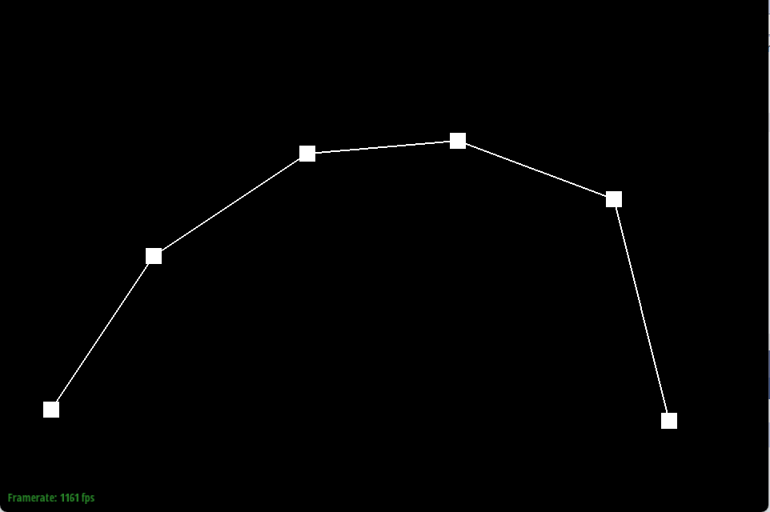
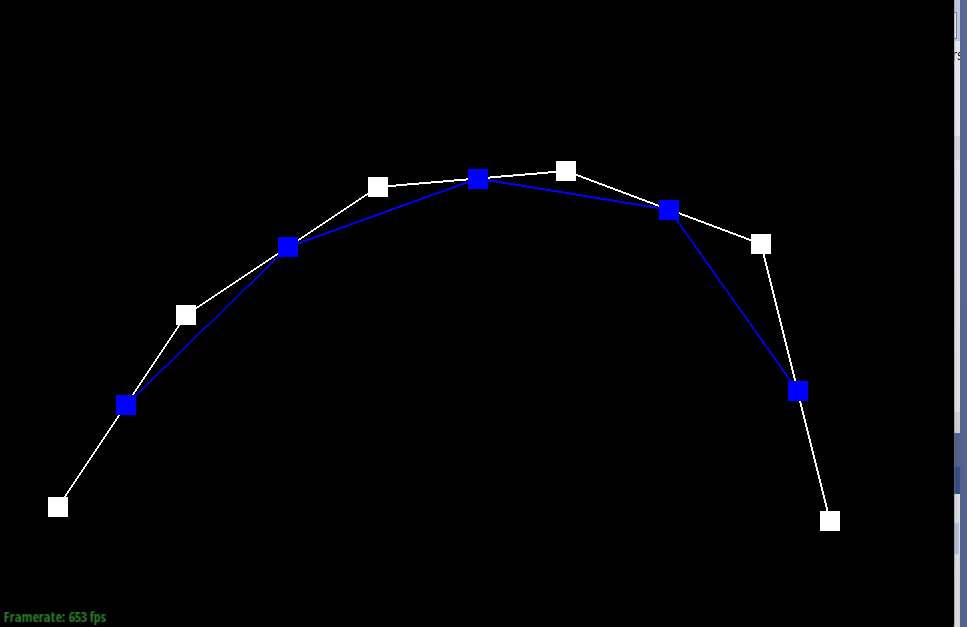
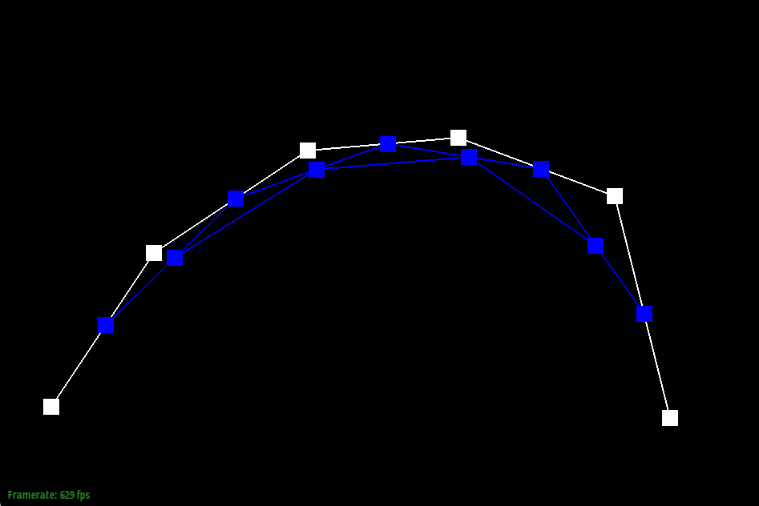
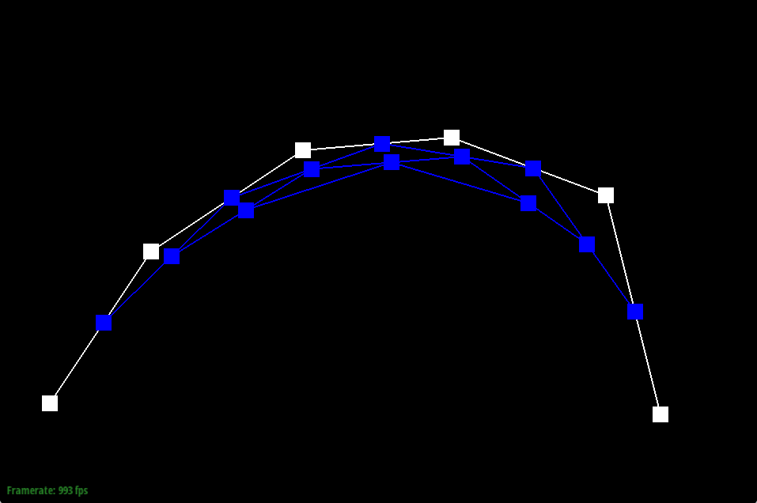
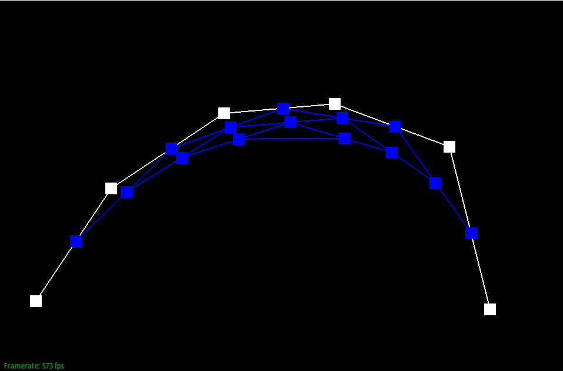
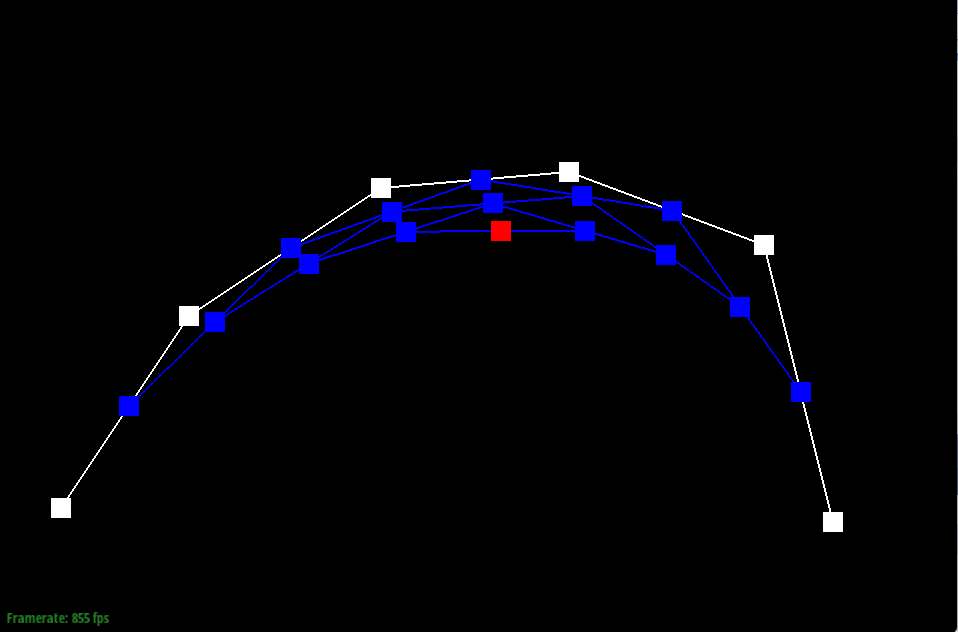
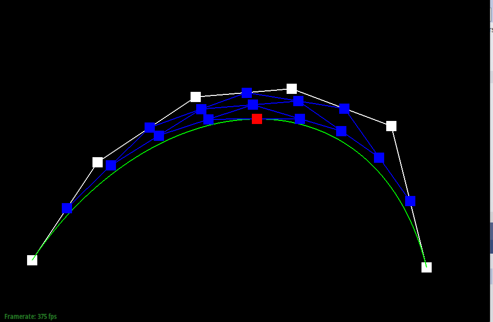
Show a screenshot of a slightly different Bezier curve by moving the original control points around and modifying the parameter t via mouse scrolling.
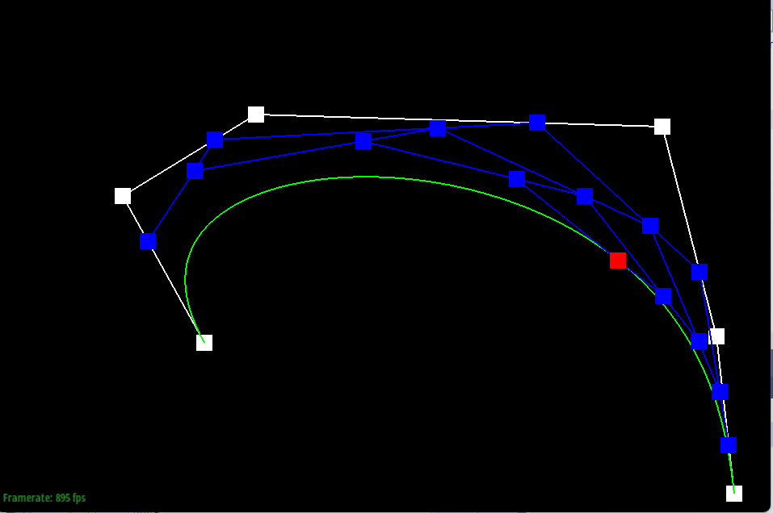
Briefly explain how de Casteljau algorithm extends to Bezier surfaces and how you implemented it in order to evaluate Bezier surfaces.
De Casteljau’s algorithm extends to surfaces by recursing on 3D control points in a control points matrix as opposed to 2D control points. Then at each iteration, the algorithm gets a new set of control points by linearly interpolating between adjacent points in both a u and v direction until arriving at a single point.
Our implementation uses three functions: evaluate step, evaluate1D, and evaluate3D
EvaluateStep: this function is essentially identical to the function from part 1, but we now we instead interpolate the respective coordinates within 3D control points in order to support the interpolation between the control points in one direction of the surface.
evaluate 1D: this function recursively applies evaluateStep until we arrive at a single point. This function completes the full de castljau’s algorithm in one direction given a set of control points.
Evaluate: this function takes in the parameters u and v which are scalars representing the position along the u and v directions of a patch along a curve. This function first uses evaluate1D to evaluate along the u-direction of the curve; for each row of control points, we use evaluate1D to compute the interpolated point at parameter u and store these points in a u_points vector. Then we interpolate in the v direction by using evaluate1D on the u_points, along with the parameter v, which then yields our final point on the bezier surface.
Show a screenshot of bez/teapot.bez (not .dae) evaluated by your implementation.
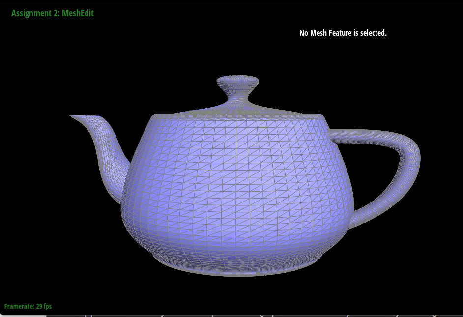
Briefly explain how you implemented the area-weighted vertex normals.
We begin by initializing a zero vector that will store the normal for return
Then, with use of the half-edge data structure, we iterate through the faces that include this vertex.
For each face, we get the vertices of that face, then use those vertices to compute two of the edges of that face ( done by subtracting vertex positions). Next , we compute the cross product of these two edges to get the face normal. Then , we scale the face normal by the area of the triangle to get the area weighted normal.
Finally, we add the weighted normal to the total normal vector initialized at the start.
Show screenshots of dae/teapot.dae (not .bez) comparing teapot shading with and without vertex normals. Use Q to toggle default flat shading and Phong shading.
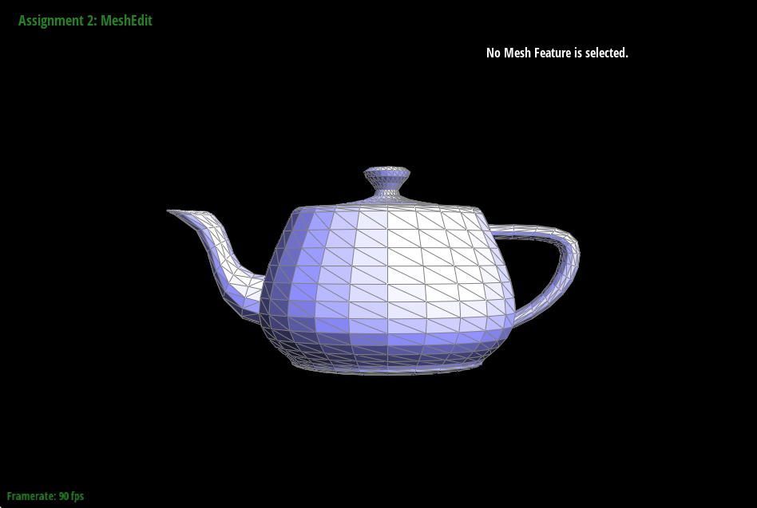
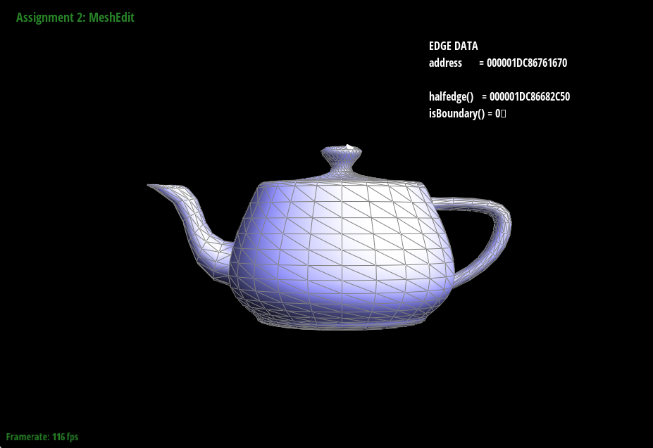